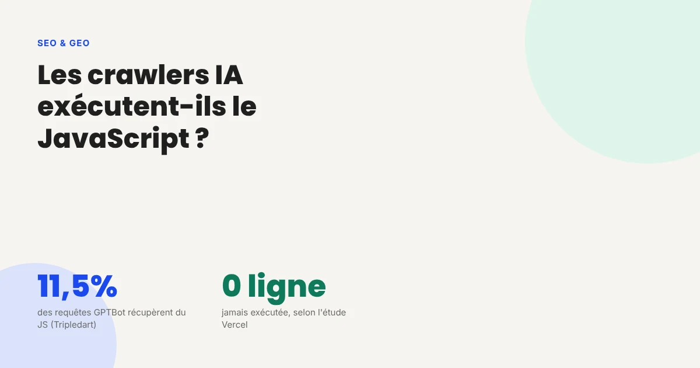

Les crawlers IA exécutent-ils le JavaScript ? Ce que montrent les études de crawl
La question revient sans cesse pour les sites construits en SPA : GPTBot, ClaudeBot et PerplexityBot voient-ils le contenu rendu côté client ? Les éditeurs eux-mêmes restent silencieux sur le sujet — seules des études de crawl indépendantes apportent des éléments concrets.

Pour un site qui s'appuie massivement sur le JavaScript côté client — une single-page application typique — une question concrète se pose dès qu'on s'intéresse au GEO : les crawlers des IA génératives voient-ils le contenu une fois rendu, ou seulement le HTML brut envoyé par le serveur avant exécution du script ? La réponse directe des éditeurs eux-mêmes n'existe tout simplement pas encore.
Un silence documentaire chez les trois principaux éditeurs
Les pages officielles décrivant GPTBot (OpenAI), ClaudeBot (Anthropic) et PerplexityBot ne précisent à aucun moment leur comportement vis-à-vis du rendu JavaScript. Ce n'est ni une confirmation qu'ils l'exécutent, ni un démenti : c'est une absence d'information de la part des trois éditeurs sur ce point précis, à la différence de Google qui documente depuis des années le fonctionnement du rendu JavaScript de Googlebot dans sa documentation Search Central.
Ce que mesure l'étude Vercel sur le trafic de crawl
Face à ce silence, la source la plus citée est une étude de Vercel sur le trafic de crawl, intitulée « The rise of the AI crawler ». Elle rapporte qu'aucun des grands crawlers IA observés, GPTBot et ClaudeBot nommément inclus, n'exécute le JavaScript lors du passage sur les pages analysées. C'est une mesure empirique de comportement de crawl, publiée par une entreprise nommée et datée — pas une déclaration officielle des éditeurs d'IA concernés, mais une observation technique vérifiable sur le trafic qu'elle a elle-même mesuré.
Une deuxième mesure, sur des logs serveur réels
Une analyse distincte, publiée par l'agence Tripledart sur ses propres logs serveur, apporte une mesure chiffrée complémentaire : GPTBot a récupéré des fichiers JavaScript dans 11,50 % de ses requêtes observées, et ClaudeBot dans 23,84 % des siennes — sans qu'aucune ligne de ces fichiers n'ait, dans les deux cas, été effectivement exécutée. Le fait que les bots récupèrent parfois le fichier JS mais ne l'exécutent jamais, selon cette mesure, est cohérent avec l'étude Vercel : le fichier est parfois téléchargé (peut-être pour l'indexation du code lui-même, ou par comportement de crawl générique), mais son contenu n'influence pas ce qui est lu comme contenu de page.
Ce qui reste non confirmé, et pourquoi la nuance compte
Deux limites méritent d'être posées clairement avant d'en tirer une règle absolue. D'abord, ces mesures portent sur des échantillons de trafic observés à un moment donné, par des tiers, pas sur une documentation technique publiée par OpenAI, Anthropic ou Perplexity eux-mêmes : un changement de comportement de leur part ne serait pas annoncé à l'avance, et ces chiffres peuvent devenir obsolètes sans préavis. Ensuite, le comportement du bot de crawl initial (GPTBot, ClaudeBot) ne dit rien avec certitude du comportement des agents de récupération en temps réel qui alimentent une réponse citée pendant une conversation — ces deux catégories de bots peuvent, en théorie, se comporter différemment, même si aucune étude solide ne les a comparées spécifiquement sur ce point à ce jour.
Ce que ça implique concrètement
En l'état des données disponibles, la prudence technique recommande de s'assurer que le contenu qu'on veut voir cité par les IA génératives soit présent dans le HTML servi avant toute exécution de JavaScript — via le rendu côté serveur (SSR) ou la génération statique — plutôt que de dépendre d'un rendu côté client pour ce contenu. C'est une recommandation cohérente avec les mesures disponibles, pas une certitude validée par les éditeurs d'IA concernés : elle doit être présentée comme telle, et réévaluée si l'un des trois éditeurs publie un jour sa propre documentation sur le sujet.
FAQ
OpenAI, Anthropic et Perplexity documentent-ils si leurs crawlers exécutent le JavaScript ?
Non. Les pages officielles décrivant GPTBot, ClaudeBot et PerplexityBot ne précisent pas leur comportement vis-à-vis du JavaScript. Ce silence documentaire n'est ni une confirmation ni un démenti : l'information disponible vient uniquement d'études de crawl indépendantes, pas des éditeurs eux-mêmes.
Que montrent les études de crawl indépendantes sur le JavaScript et les crawlers IA ?
Une étude de Vercel sur le trafic de crawl (« The rise of the AI crawler ») rapporte qu'aucun des grands crawlers IA observés, dont GPTBot et ClaudeBot, n'exécute le JavaScript. Une analyse de l'agence Tripledart, portant sur ses propres logs serveur, rapporte que GPTBot a récupéré des fichiers JavaScript dans 11,50 % de ses requêtes et ClaudeBot dans 23,84 %, sans qu'aucune ligne n'ait été exécutée dans les deux cas.
Faut-il renoncer au rendu côté client pour être visible dans les réponses IA ?
Les données disponibles pointent vers le rendu côté serveur (SSR) ou la génération statique pour le contenu qu'on veut voir cité par les IA génératives, par cohérence avec ce que les études de crawl mesurent — mais aucun éditeur d'IA ne l'a confirmé officiellement comme une exigence technique de sa part.
Un site en SPA à auditer pour sa visibilité dans les réponses IA ?
Pour aller plus loin, voir la page GEO, et l'article robots.txt ou llms.txt : faut-il bloquer les crawlers IA sur son site ?.
Pour continuer sur ce sujet.